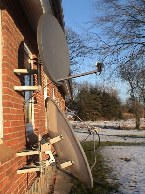
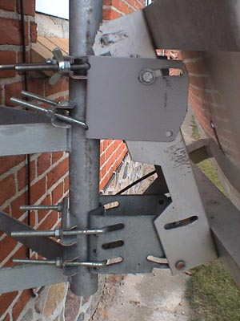
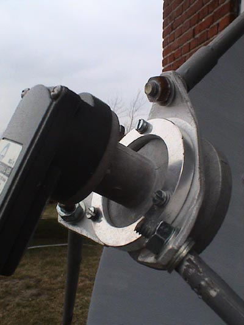
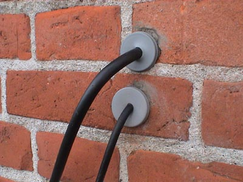

1. Hvis du vil se britisk TV, så kan du jo sikkert engelsk i forvejen.
2 Så kan du søge på nettet efter de ting, jeg nævner, spørg i diskussionsfora osv.- og de fleste af dem er på engelsk
3 Jeg gider ikke skrive den to gange, da der også er engelsktalende, der gerne vil læse det.
So you want to see British TV in Europe? It is actually possible, and without spending money on a subscription. It's also perfectly legal, since the signals are not encoded - it's Free-to-Air (FTA). You're not supposed to, though - it's transmitted as a service for people in Britain and Ireland. The Astra 2 satellites are at 28.2° east, and are aimed westward, so they just reach the British isles. Or that's the idea. You can pick them up in Europe if your dish is big enough. What you get is BBC 1-4, ITV 1-4 (all regional versions), two BBC children's channels, BBC 24 hour news, and a number of international channels like CNN. There are also hundreds of trashy shopping channels, quiz channels, religious and ethnic channels. There are also a large number of radio channels.
The are two free services, confusingly both called Freesat.
One is operated by Sky television, so there are also a large number of subscription channels and pay-per-view services. They won't let you subscribe if you live outside the British isles, though, so if you want do that, you'd need to do it from a British or Irish address, and if they ever suspect you're actually abroad, they'll cancel it without warning.
There are also some FTV (Free-to-View) channels (e.g. Channel 4, Five, and Sky 3) if you live in Britain. FTV is where you can get a card if you have a valid TV license (there is a one-time payment of £20 for the card). Again, you need to phone from Britain and have an address there to send the card to. Channels from the Republic of Ireland are only available with a Sky subcription, and to people with an Irish address.
First of all, you need to find a large satellite dish. Dish size and correct alignment is everything - if you double the size of the dish, you quadruple the signal strength. Larger dishes are more difficult to align. It's like a powerful telescope: if you point it correctly, you can see your target very well, but if you can't point it so precisely, you'd be better off with less powerful (but wider) magnification.
This link gives you a rough idea of what size is necessary. This link shows some Danish reception reports for different dishes and receivers.

Most dishes these days are offset dishes - they're not perfectly circular, and there are a number of focus points. The dish itself doesn't receive signals, it just reflects them and, like a concave lens, it focuses them. Offset dishes have an arm sticking up from the bottom, and one or more LNBs at the end. The LNB is the actual receiver. If you have a number of them (I've seen some with 8), they can cover a large angle of the sky. For multiple LNBs, you need to have a receiver that can control more than one LNB (a DiSEqC interface, which also can be used to control motorised dishes).
Big dishes (over 1 m diameter) are usually prime-focus dishes. These are perfectly circular, and there is only one focus point (which gets all the reflected signals), so you can have only one LNB on it. For British TV, this is not a problem, as the Sky digiboxes cannot control more than one LNB. Older dishes that you find on the second-hand market may well have a motor, so you from your remote control can (slowly) zap between satellites. They've gone out of fashion - they were expensive, slow, and difficult to install. Nowadays, you'd choose an offset dish with a number of LNBs. I hear the motorised dishes still being sold have often pretty poor, inaccurate motors these days, so it can easily get out of alignment. If you want a motorised dish, maybe you're better off looking for something second-hand.
But you want British TV, so you get a big, prime-focus dish. Mine had a motor; I threw it away. It was on a big aluminum stand that would have to be fixed in concrete in the garden. My wife wouldn't have it! I fixed it to a south-facing wall (all TV satellites are at the equator). It's a big dish, so I needed a good strong mount. Anyway, if you live in a windy place, you want a good strong mount anyway. Choose one with at least three points where it's bolted to the wall.
For people in Northern Jutland, 
Despite the dish being circular, there is actually an up and a down side to it - there should be a small hole in the rim so rain water can run out, so make sure this is at the bottom. I painted the dish grey to fit in better with the surroundings. The coat of paint should be as thin as possible, though.
You of course also need a digital satellite decoder. You could buy a Free-to-Air (FTA) one and enter the channels manually, and manage without the electronic program guide (EPG). It's probably just as easy to buy a proprietary decoder instead. These are either for Sky, or for the BBC/ITV service. The Sky digiboxes have slots for subscription cards, the others don't. It will take a while for secondhand BBC/ITV freesat boxes to come on the market, whereas Sky digiboxes have been sold for many years. Various websites sell them new or secondhand to the European market. If you can find someone on eBay that's willing to post one abroad, that could be quite cheap. A lot of people in Britain are getting rid of their Sky digiboxes since digital terrestrial TV was introduced. I bought my first one in 2006 second-hand for £50, and they're probably available cheaper now. Check some of the links at the bottom of this page first, though - some models are much better at picking up weak signals in Europe than others. There are also Sky hard disk recorders (Sky+ or Sky Plus), however these require a monthly subscription, and, again, they won't let you subscribe if they know you're outside the British isles.
I'd recommend the new BBC/ITV freesat service instead. The first freesat HD receiver with hard disk recorder (with no subscription) is expected to be sold from August 2008. The Freesat website lists the available receivers and where you can buy them. Note that Grundig, Bush and Goodmans are the same company, and their receivers seem to vary only slightly in appearence. I read a test someone did in Spain between Bush and Humax, and the Bush worked better with a weak signal (remember - the service is specifically designed to prevent people outside the British isles from seeing it, whereas equipment manufacturers may have a different perspective). You can buy a standard definition (SD) freesat box for £50, and a HD one for £120 and upwards (of course it receives SD too). Since it's not so much more, I'd recommend the HD boxes, as HD will become the new standard over the next few years. I bought a Bush HD, and it has a better signal strength and quality than my old Pace 2500 Sky Digibox (which was probably one of the worst digiboxes for picking up weak signals).
So where do you point your dish, if you're doing the installation yourself? You need to know the longitude of the satellite - e.g. 28.2° for the Astra 2 satellites (East is positive, West negative), and the latitude and longitude of your house. See this link to calculate where to point it. The elevation is between 0° (horizontal) and 90° (directly overhead). In Denmark it's about 25°. The azimuth is the compass angle (180 is due south).
You need to place the dish where there is a clear view to the satellite - no buildings or trees in the way. The first dish I put up was an offset dish (to get DR2 on the Thor II satellite). I used a compass placed on the LNB arm. If you have a big steel dish, it can affect your compass, making the readings unreliable. Anyway, the good thing about offset dishes is that the LNB arm is pointing in the same direction as the dish. If you can't use an compass at the dish, you could measure the angle to the wall. You should be able to assume your wall is perfectly vertical: 90° (start worrying if it isn't!), and you could find the orientation of the wall using a compass, or perhaps with a very detailed street map containing your house (say at a scale of 1:5000). Note that you have to measure the angle the dish is pointing at. On an offset dish, it's easy: the arm supporting the LNB is pointing the same way. But on a prime-focus dish, the three arms are pointing in different directions. You need to find something (probably behind the dish) that's parallel to the direction of the dish.
For the elevation, you could use a spirit-level angle measurer.
In the center of the prime-focus dish, there's a feedhorn - concentric metal rings. On most offset dishes, the feedhorn is part of the LNB - you can't see it, it's covered in plastic. On the 1980's prime-focus dish I bought, there was an electrical transformer inside the feedhorn. Depending on which voltage was applied to it (by the receiver), I am told it would allow horizontal or vertically-polarised signals through. As I understand it, this is something a Universal LNB now does. I removed the transformer and fitted a new LNB. You have to make sure it's a Universal LNB for prime-focus dishes - there are not that many of them on the market. It should be a C120 fitting.
If you've bought an old dish, you may well need a new LNB. The Invacom 0.3dB, and Digiality 0.4dB ones are good. The dB value refers to the noise-to-signal ratio; the lower, the better.
Anyway, I measured strong signals, using a little, cheap signal meter. They cost about £20. You attach one end to the LNB, and the other to your receiver (which supplies the power). The needle goes up and down as you move the dish, telling you where the strongest signals are. Unfortunately, unless you want to spend £100 or more on a digital signal meter, it won't tell you what satellite you're picking up, or whether it's an analogue or digital signal.
I swung the dish back and forwards, up and down, and picked up lots of signals. I had decided to first of all try to find DR2, an analogue channel on the Thor II satellite. I use my existing dish and analogue receiver to pick up this channel, so I know the receiver works ok. However, no matter how strong the signal and which satellite the dish was pointing at, I was not finding any channels on my TV. I decided I needed a new feedhorn, as the original one was no doubt designed for completely different signals sent back in the 1980's. I found the following Universal feedhorn kit for Prime Focus dishes including boss which should fit most types of prime focus dishes. I cut off the old feedhorn (I needed to use a hacksaw). The problem then was that the triangular 'feedhorn boss' is supposed to be vertical, but the three arms on the dish were coming in at an angle - it would be difficult to bolt the feedhorn boss onto them. The solution was sections of threaded steel bars (it seems to be a standard size, it fitted the hollow dish arms, and the holes in the feedhorn boss. You just have to bend the threaded rods so that after they go through the hole, they are perpendicular to the feedhorn boss and you can tighten bolts on them.

Once you've fitted the feedhorn (in its 'boss') to the arms, how do you know it's pointing right at the centre of the dish? It's probably at the centre of the imaginary sphere of which your dish is part, but it could be pointing to one side, and very small misalignments can make you miss the signal entirely. My suggestion is to shine a bright light, at night, through the hole in the centre of the feedhorn. Adjust the nuts, and tighten then once the beam points right in the centre (there's a hole in mine right at the centre of the dish, probably to let rain out if it's pointing straight up). Then attach the LNB. Don't, whatever you do, remove the clear plastic cap on the LNB that faces the dish. It's to keep dampness out - it allows radio waves to pass. If it's damaged, use clingfilm to seal the LNB.
There's one more adjustment you have to make - the skew, or polarisation tilt. I'm not going to talk about multiple LNBs on an offset dish, since I've never installed them and don't know how to adjust each LNB. But on the prime focus dish, you may have to put the LNB at a slight angle. If the satellite you're pointing at is due south of you, then the LNB will be horizontal. If instead you're at, say 9° east and the satellite is at 28.2° east, it will have to tilt a little so the left side (when you're standing in front of it) points upwards. It's like tilting your head to read a page in a book that's at an angle to you. On this website, you can enter your latitude and longitude, and the longitude of the satellite, and it will tell you the skew, the elevation (vertical angle) and the azimuth (horizontal angle). Note these are not decimal degrees: 90° is overhead, and 180° is due south.
Actually, I found that there was no signal at the correct skew angle, so I just had to turn it very slowly and look at the signal strength all the time.
When you go looking for the signal and adjust your dish, wait for some good weather: clear skies, no rain, and little wind. Remember, with digital signals, usually you either have a perfect picture, or you have nothing. So you can't usually tell from the picture quality - you need to measure the signal strength to ensure the best signal. Just before the signal disappears, though, you can see poor quality pictures - there may be square blocks in the picture (pixel errors), or the picture may freeze for a second or two.
It's best to try to finish your adjustments that day - if you attach the signal meter between the LNB and the cable connected to the decoder (which supplies the power), it's easier to watch the meter while slightly moving the dish. Once you're finished, you need to seal the connection between the LNB and the cable to make sure no dampness can get in. Use self-amalgamating tape (satellite equipment shops sell it). Once you've done that, you can't attach the meter to the LNB again unless you cut open the tape, so if you don't finish one the first day, you'll have to seal it, and try afterwards with the meter attached at the other end of the cable, to the decoder (you'll probably need someone inside the house to shout out the meter readings to you).
Once everything is working, you may still find that the signal disappears from time to time or becomes very weak. Rain will weaken your signal, as will clouds and fog (the signals from the satellite are in the microwave band, so water absorbs its energy). Strong winds may move your dish very slightly, causing a permanent reduction in signal strength until you readjust it. Snow and ice coating the dish will reduce its ability to reflect signals and will shift the focus point, so try to remove snow and ice.
I drilled a hole in the wall for the satellite cable. 
Having done that, I started reading about earthing (grounding). Turns out I should have earthed the copper shielding on the coax cable before it enters the house. I'm not too keen on that - dampness could get into the cable. You should earth your receiver, your satellite coax cable, and the dish itself. And they should be earthed to the same spot. Don't earth to radiators, water pipes, etc. They're painted, there may be a poor connection, and you don't know how or where the current goes to earth.
You can find discussions on the internet of ground loops - equipment is plugged in to different sockets, earthed at different places, and not necessarily at 0 volts. When you connect this equipment to each other with audio cables, coax, etc, you'll get some current running along these cables and causing noise and interference. Ideally everything should be earthed to the same spike - a copper rod in the ground. I'm not an electrician, so you may need to talk to one. He probably has some equipment to test how good an earth connection the your electrical sockets have (if you live in Denmark, as I do, you might have only 2-pin electrical sockets). It's a good idea these days to have 3-pin sockets connected to earth everywhere - not only for your safety, but also for the benefit of modern, sensitive electronic equipment.
Static electricity can build up on dishes, so earthing them to the same place as the coax cable and receiver, TV etc, is a good idea. Otherwise you can shorten the life of your electronic equipment, like the LNB.
I have attached a wire to the shielding of the F-connector (where it is fitted to the decoder). The wire goes to the earth pin of the three-pin electrical plug, and thus earths the dish, the cable and the decoder in one. When I earthed my analogue receiver, for the first few minutes after that, the volume went up and down every few seconds. It's never done that since, so obviously some static electricity had built up on the dish.
Sky sends software updates to digiboxes from time to time. If it's switched on or on standby, it can receive these - it will go into standby mode when it starts. It's usually done around 05:00 GMT, and each night during the update period it will send updates out for particular digibox models. You can force an update, but the software version you receive may not be the newest - typically they do scheduled updates for all the different boxes a few weeks before they update the 'forced download' versions. The BBC/ITV freesat system does similar updates, but lets you choose whether to let the system do automatic updates, or only when you choose.
Note that there is some danger to your digibox in these updates, if you're living outside the U.K. If the update fails, you may well be left with a dead piece of electronic junk - it's deleted the old version and hasn't installed the new. This could happen if the power is switched off during the update, or if the signal disappears. So don't force an update, and switch off the power at night, if there's poor signal strength or quality. If you are living in the U.K, you could send it for repair to reinstall the software, but that's expensive from abroad.
Many Sky digiboxes get quite hot - even in standby mode, so I prefer to switch mine off when not in use. It should also lengthen its life, since overheating kills a lot of them (make sure nothing is sitting on top of yours).
The following forum is a good place to ask questions if you're stuck. As in any forum, read the FAQ first, and read/search what's already posted before you ask a question.
http://www.astra2d.com - all about the satellite for British TV
http://www.satcure.com - read the free e-book Understanding Sky Digital TV, and consider buying the very useful Installing Sky Digital TV ebook.
http://www.digitalspy.co.uk/satellite/ British satellite TV, with discussion forums.
Hope you found this useful. I wish you good luck, David Douglas
{kind=link}
{kind=link}
{kind=link}
{kind=link}